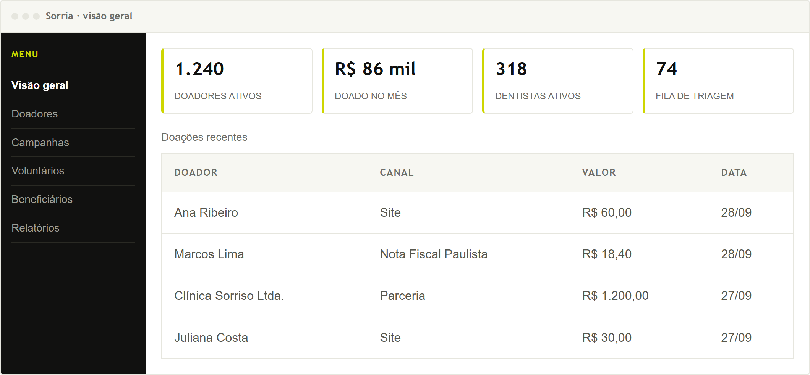

+90 mil
jovens de 11 a 17 anos já atendidos
Fonte: site oficial da Turma do Bem
Challenge FIAP · 1TDSPS · Sprint 1
O Sorria organiza a captação e o relacionamento da Turma do Bem num lugar só, para que nenhum doador, dentista voluntário ou empresa parceira se perca no caminho.
O problema em números
A Turma do Bem conecta dentistas voluntários a jovens que precisam de tratamento. O alcance cresceu, mas o cadastro de quem doa, de quem atende e de quem é atendido está espalhado entre sistemas, planilhas e formulários.
+90 mil
jovens de 11 a 17 anos já atendidos
Fonte: site oficial da Turma do Bem
+18 mil
dentistas voluntários cadastrados
Fonte: site oficial da Turma do Bem
19 anos
de prestação de contas publicada
Fonte: relatórios de 2006 a 2024
A solução
Cada pessoa que chega pelo site, pelo formulário ou pela Nota Fiscal Paulista vira um cadastro único, e não um e-mail perdido na caixa de entrada.
Histórico completo de cada doador: o que doou, quando, por qual canal e o que recebeu de volta. É o que transforma doação única em doação recorrente.
Indicadores prontos para a prestação de contas, no lugar de fechar planilha à mão no fim do ano.
Como isso aparece na tela
Este é o esboço da ferramenta nesta primeira sprint: a organização das áreas, ainda sem o acabamento visual. O desenho evolui a cada entrega.

Quem está por trás
Turma 1TDSPS da FIAP. Este site apresenta o projeto que a equipe desenvolve ao longo das quatro sprints do Challenge.